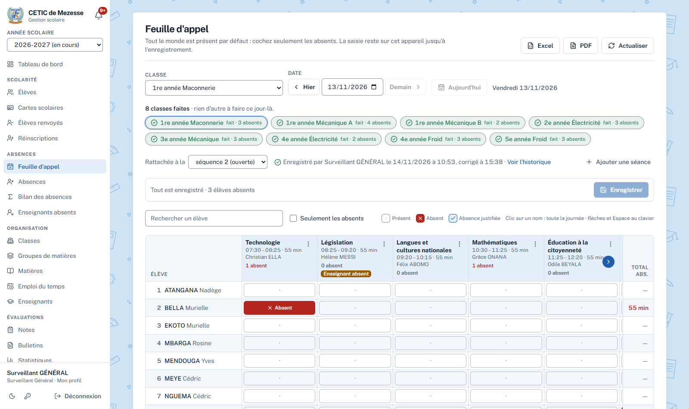
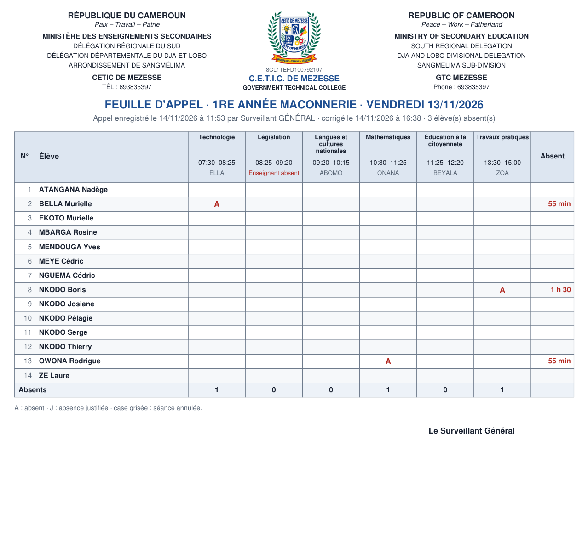
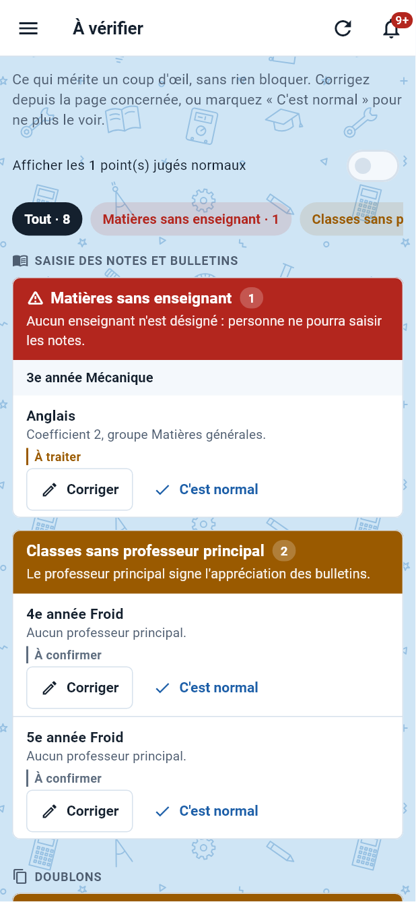
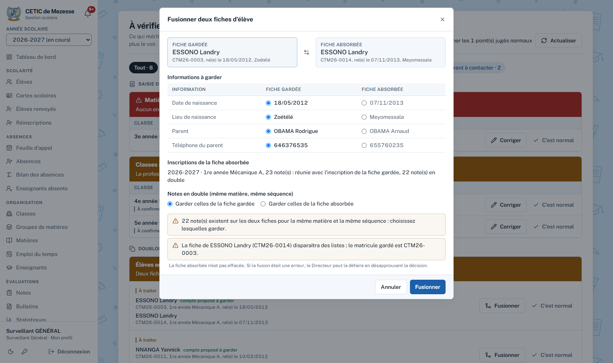
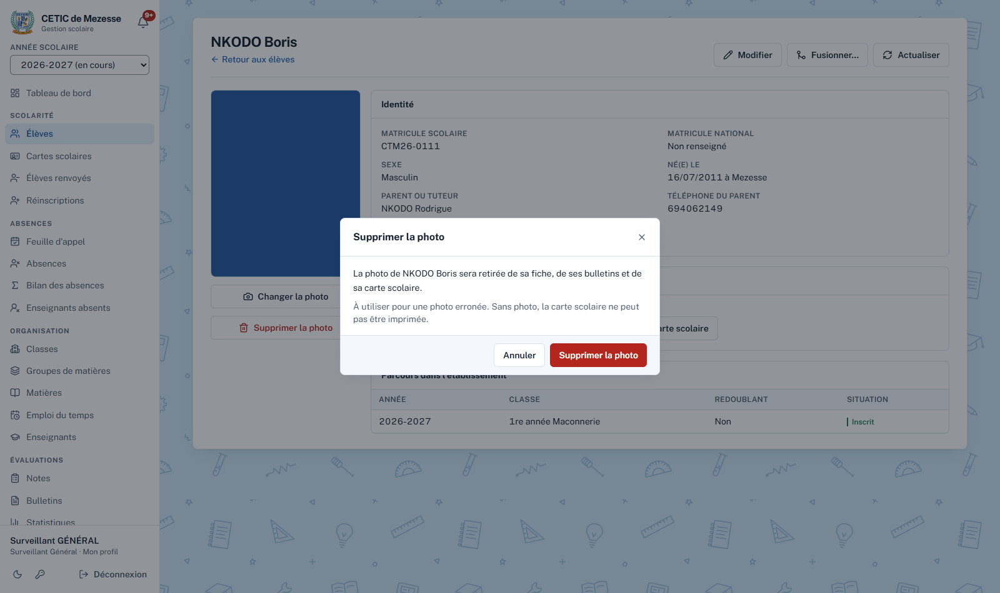
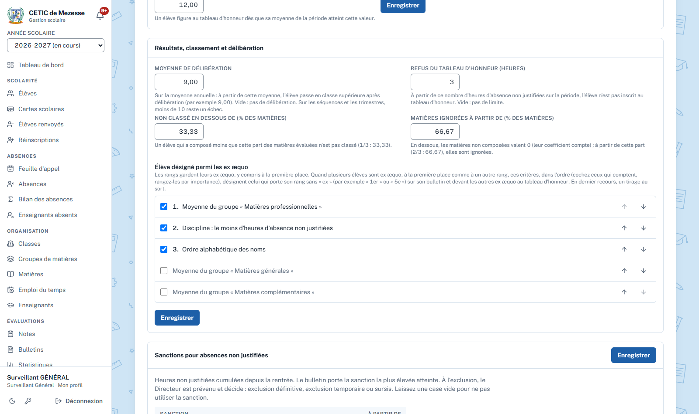

Le Surveillant Général tient les absences ; vous les suivez et décidez des exclusions. Vous profitez aussi des exports, de la page « À vérifier » et des nouvelles règles des résultats.
Nouveauté
Où
Suivre les absences (lecture seule)
Menu Absences ; Organisation → Emploi du temps
Décider d'une exclusion
Bilan des absences ou Élèves (bouton Décider)
Exports Excel et PDF
En haut des pages (mobile : menu Exporter)
À vérifier, fusion des doublons d'élèves
Administration → À vérifier
Supprimer la photo d'un élève ; défaire une décision du SG
Fiche de l'élève ; Décisions prises
Notifications sur le téléphone et le navigateur
Proposées à la connexion
Règles des résultats, bilan annuel
Paramètres ; bulletins
Bon à savoir. Les cours ont lieu du lundi au vendredi : l'application ne propose ni cours ni appel le samedi et le dimanche.
1. Suivre les absences
Le Surveillant Général saisit l'emploi du temps, fait l'appel et enregistre les justificatifs. Vous consultez tout, en lecture seule : le menu Absences (Feuille d'appel, Absences, Bilan des absences, Enseignants absents, avec un filtre par enseignant) et Organisation → Emploi du temps.

Figure 1 — La feuille d'appel · site à gauche, application mobile à droite
Le numéro d'ordre. Chaque élève a un numéro dans sa classe (1, 2, 3… dans l'ordre alphabétique), le même sur tous les écrans.
2. Les exclusions : la décision du Directeur
1
Être prévenu : la notification Heures d'exclusion atteintes arrive une fois par élève et mène au bilan de sa classe. La colonne Sanction de la liste des Élèves, avec son filtre, montre aussi qui est concerné.
2
Décider : le bouton rouge Décider (Bilan des absences ou Élèves) propose trois choix.
Exclusion temporaire : le nombre de jours, libre, et le premier jour ; l'élève revient de lui-même.
Exclusion définitive : pour toujours ; l'élève passe parmi les Élèves renvoyés et ne peut plus être réinscrit.
Sursis : l'élève reste en classe, avec le blâme sur le bulletin.
Le Surveillant Général en est prévenu. En cas d'erreur : Annuler la décision, sous la sanction de l'élève.
Figure 2 — Le bilan des absences, avec « Décider » · site à gauche, application mobile à droite
3. Imprimer et exporter
Les boutons Excel et PDF, en haut des pages, exportent ce que la page affiche, filtres et tri compris. Le PDF porte l'en-tête officiel du CETIC, avec les filtres sous le titre ; un tableau large passe en paysage. Sur le mobile, c'est le menu Exporter.
Page
Ce que contient le fichier
Feuille d'appel
La feuille du jour : A (absent), J (justifiée), absents par séance. Pas encore faite : vide, à remplir au crayon en classe.
Bilan des absences
Les heures de chaque élève, la sanction au bulletin, la place du visa du SG.
Les tableaux de la page ; les graphiques sous forme de chiffres.

Figure 3 — Une feuille d'appel exportée en PDF
4. À vérifier, doublons et fusions
Menu Administration → À vérifier (Surveillant Général et Directeur) : ce qui mérite un coup d'œil, sans rien bloquer, rangé par urgence.
Saisie des notes et bulletins : matières sans enseignant ou confiées à un compte désactivé, classes sans professeur principal.
Doublons : enseignants, élèves ou matières qui se ressemblent.
Fiches d'élèves : date de naissance au 1er janvier (souvent approximative), élève sans parent à contacter.

Figure 4 — La page À vérifier · site à gauche, application mobile à droite
Chaque point propose :
1
Corriger : ouvre la page où le corriger (la matière, la classe, la fiche).
2
Fusionner (doublons) : deux fiches de la même personne n'en font plus qu'une. Choisissez, ligne par ligne, les informations à garder ; les notes, absences et inscriptions passent sur la fiche gardée. Vous fusionnez les doublons d'élèves ; ceux d'enseignants sont fusionnés par le Surveillant Général. Une fusion faite par le SG se défait en la désapprouvant (Administration → Décisions prises).
3
C'est normal : retire le point de la liste, après confirmation. Afficher les points jugés normaux les fait réapparaître ; Signaler de nouveau les remet dans la liste.

Figure 5 — Fusionner deux fiches d'élève · site à gauche, application mobile à droite
Les doublons évités à la saisie. Avant de créer ou de renommer un enseignant, un élève, une matière ou une classe, l'application montre les fiches qui ressemblent. Elle ne refuse jamais : s'il s'agit bien d'une autre personne, Enregistrer quand même. Un formulaire envoyé deux fois (double clic, réseau lent) n'est enregistré qu'une seule fois.
5. Les photos des élèves
Sur la fiche de l'élève, Supprimer la photo retire une photo erronée, après confirmation : elle disparaît de la fiche, des bulletins et de la carte scolaire. Sur le mobile, touchez la photo, puis Supprimer la photo. Si le Surveillant Général a supprimé une photo par erreur, désapprouvez sa décision : la photo revient.

Figure 6 — Supprimer la photo d'un élève, avec confirmation
Sans photo, la carte scolaire ne peut pas être imprimée : ajoutez la bonne photo avec Changer la photo.
6. Les notifications sur le téléphone et le navigateur
Les notifications de la cloche (ouverture de la saisie des notes, décisions, heures d'exclusion atteintes…) arrivent aussi sur le téléphone et dans le navigateur, même application ou onglet fermé.
1
Les activer : à la connexion, l'application propose « Recevoir les notifications ? » (mobile : Autoriser) ou « Recevoir les notifications sur cet appareil ? » (site : Activer). Plus tard repousse la question.
2
Les toucher ouvre directement la page concernée.
3
Se déconnecter : l'appareil ne reçoit plus les notifications de votre compte, même si la session a expiré ou si le réseau manquait (la demande repart dès que le réseau revient). Sur un téléphone ou un ordinateur partagé, la personne suivante ne voit donc pas vos notifications.
7. Le classement et la fin d'année
Les ex æquo. Les rangs se calculent sur les moyennes arrondies au centième, et des élèves ex æquo partagent leur rang, y compris à la première place (« 1er ex »). Quand plusieurs élèves sont ex æquo, à la première place comme à un autre rang, les critères rangés par importance dans les Paramètres (moyenne d'un groupe de matières, comme les matières professionnelles ; discipline, c'est-à-dire le moins d'heures d'absence non justifiées de la période ; ordre alphabétique), puis un tirage au sort, désignent celui qui porte son rang sans « ex » (par exemple « 1er » ou « 5e ») partout dans l'application (relevé de notes, classements, statistiques, bulletin, rangs par matière compris) et devant les autres ex æquo au tableau d'honneur (liste et certificats). Le Surveillant Général voit ainsi, avant d'imprimer, le rang que portera chaque bulletin.
Les matières non composées (sur une séquence) : moins d'un tiers des matières évaluées composées, l'élève n'est pas classé (« NC ») ; entre un tiers et deux tiers, les matières manquantes valent 0 et leur coefficient compte ; plus de deux tiers, elles sont ignorées (note vide, coefficient non compté). Les deux seuils se règlent dans les Paramètres.
Le trimestre se calcule sur les séquences où l'élève est classé : une seule note dans une matière devient sa note du trimestre ; non classé à une séquence et classé à l'autre, cette dernière devient son trimestre ; non classé aux deux, il n'est pas classé au trimestre.
L'année est la moyenne des trimestres classés ; sans trimestre classé, l'élève n'est pas classé.
La réussite : 10 de moyenne sur les séquences et les trimestres. Sur l'année, la moyenne de délibération (par exemple 9,00), si elle est réglée, permet le passage : « Admis(e) après délibération ».
Ces règles se règlent, par vous ou le Surveillant Général, dans Administration → Paramètres, carte Résultats, classement et délibération. Le tableau d'honneur peut aussi être refusé au-delà d'un nombre d'heures d'absence non justifiées sur la période.

Figure 7 — Résultats, classement et délibération
Le bulletin de fin d'année. Le bulletin du 3e trimestre porte un cadre Bilan annuel : la moyenne et le rang de chacun des trois trimestres, la moyenne annuelle et le rang annuel, le profil annuel de la classe (moyenne, min – max, taux de réussite, élèves classés) et la décision du conseil de classe, calculée d'après la moyenne annuelle : « Admis(e) en classe supérieure » (10 et plus), « Admis(e) après délibération » (à partir de la moyenne de délibération) ou « Redouble ». Il remplace le bulletin annuel, qui n'existe plus.
Ce qu'il faut avant chaque action
Pour…
Il faut d'abord…
Où
Décider d'une exclusion
L'élève a atteint les heures d'exclusion réglées par le SG